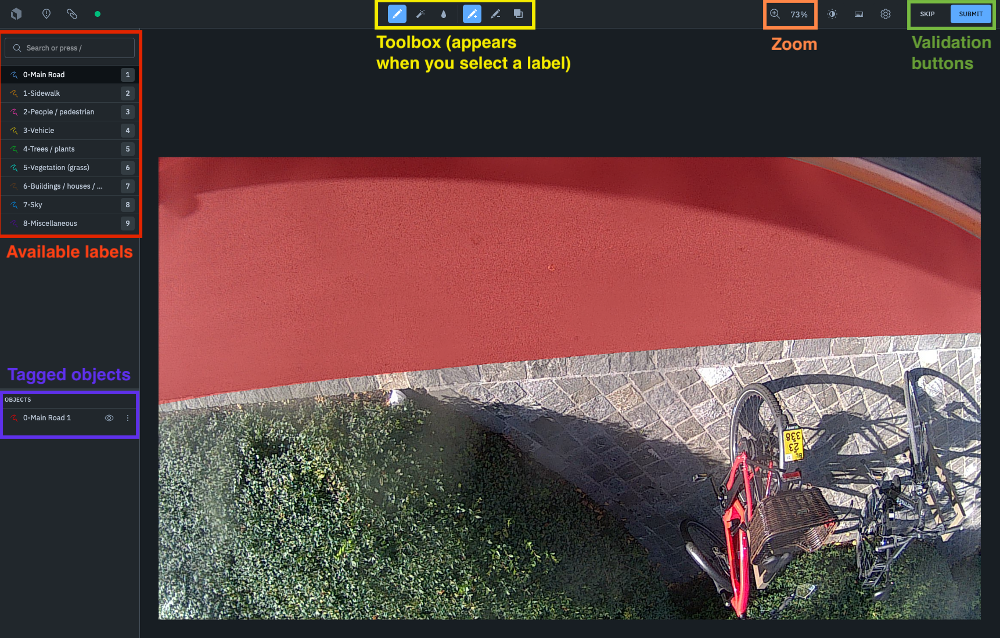
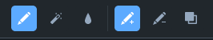
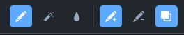
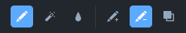
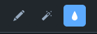
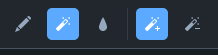
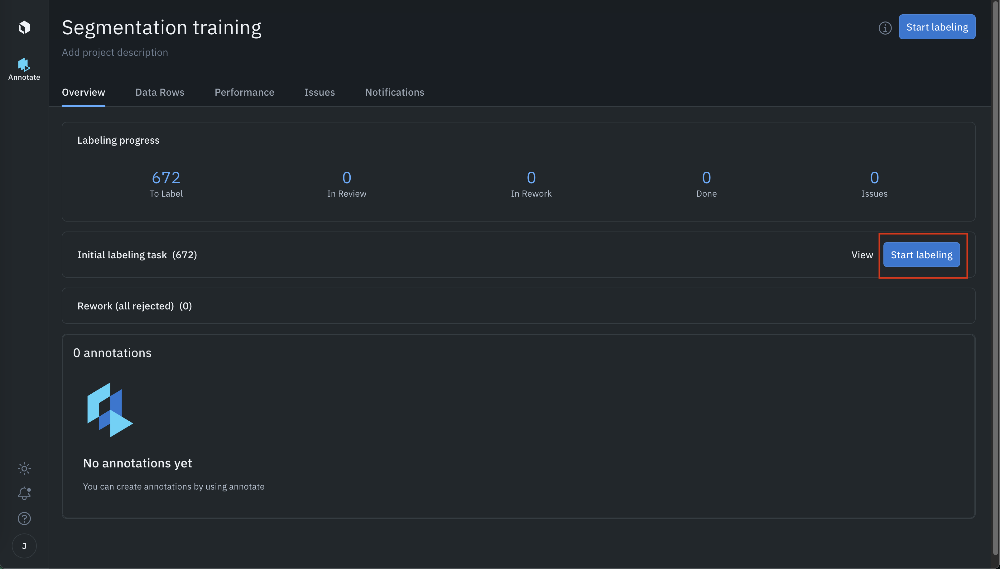
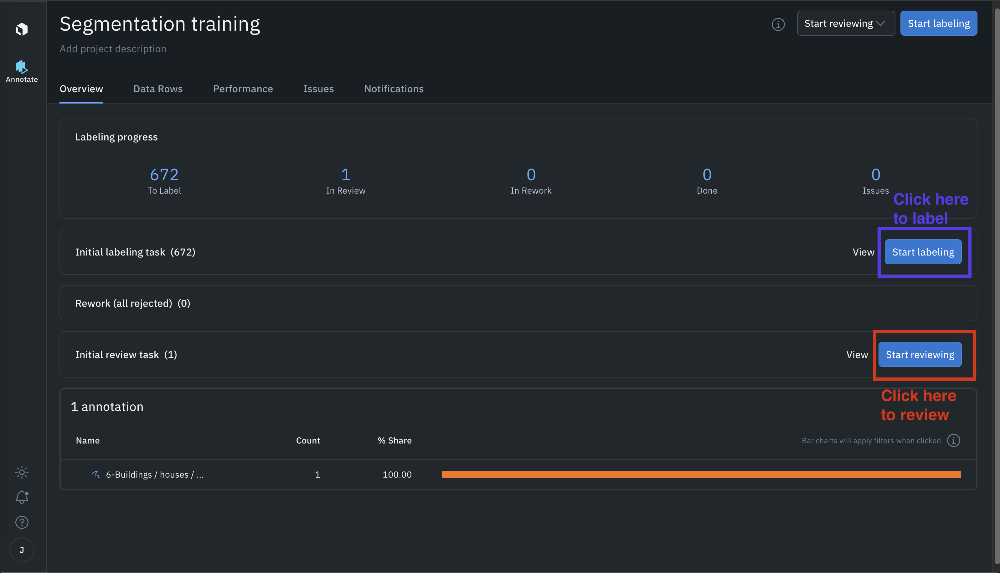
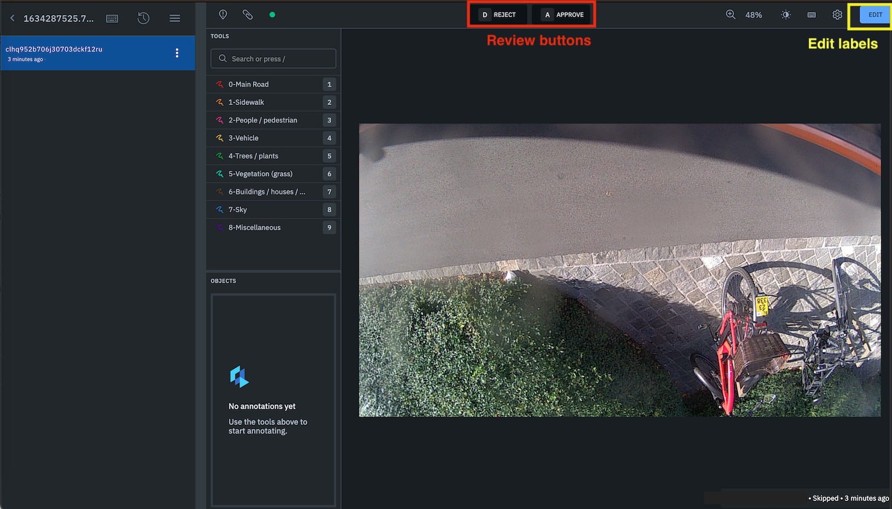
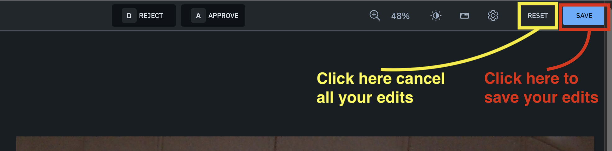

Main view

Here you have main view of your segmentation workspace.
On the top left, you can see a list of predefined labels. If you click on one of these labels, the toolbar appears at the top of your workspace and you can start to segment the image.
When you draw a zone, then a corresponding object appears in the list onf the bottom left.
Use the zoom if you have to cut out more detailed objects.
When you're satisfied with the segmentation, you can click on the sumbit button on the top right.
Alternatively, if you have a bad image (e.g. with private info), you can press the skip button without tagging it.
Toolbar
Add zone

This tool allows you to draw a zone of the selected label.
- If you draw a zone A with a label and then a zone B that touches zone A with the same label, it will form one single bigger zone.
- If you draw a zone A with a label and then a zone B that overlaps zone A with another label, the overlapping part will be ignored (first drawn zone prevails).
Add or replace zone

This tool allows you to draw a zone of the selected label, replacing any overlapping zone.
- If you draw a zone A with a label and then a zone B that overlaps zone A with another label, the overlapping part will be replaced by B (newly drawn zone prevails).
Delete zone

This tool allows you to delete any zone you draw. The whole zone won't be deleted, only the part you selected.
Fill zone

This tool allows you to fill an empty part of the image with a selected label. Any time of have a zone that's already delimited by others zones (or the image borders), you can use it.
Auto-detect

The magic wand allows you to auto detect an object. You simply draw a box around the object and it will automatically select it with the selected label. This will help you to quickly and roughly cut out a shape, but it won't be perfect so you'll need to "pain" the rest of the shape yourself (and usually smooth / correct the borders of the shape).
How to label
As labeler, your role is to segment the image.
Here is a view of the main menu:

Click on the "Start labeling" button to access your worspace (see image in section above).
When labeling: please be very precise with the shapes - you can correct them if it's not well cut out, and choose carefully the labels. There should be no empty parts.
- Select a label from the list
- Select your tool (add/add or replace/delete/fill/auto-detect)
- Draw as many zones as you want
- When you're done with this label, press "Esc" key
- Start again with another label
How to review
Reviewing means checking the other taggers work, and it means that you're the last person who will see this image, so you need to make sure that the segmentation is perfect. This includes:
- Deleting or reshaping zone that were poorly drawn
- Adding any missing zone
- Ensuring that the whole image is segmented (no empty parts)
- Checking all the labels and changing them if there is any error
If you're a reviewer, here is the main page that you will see:

You can also label, but your prioritary task will be to review the labeled images. Please start labeling only if the "Review" queue is empty.
When you start reviewing, you will have 3 different options: "Reject", "Approve" and "Edit":

- REJECT: the image should not have been tagged.
- APPROVE: the image was perfectly tagged.
- EDIT: there are some mistake and you need to edit the segmentation
When you click on edit, the toolbar will change, and you'll be able to click on the labels on the left (which will give you access to the labelling tools).
You can start mofifying the labels until it's all correct. Then, click on th "Save" button to save you image. If, for some reason, you want to get back to the image as it was initially persented to you, you can click on "Reset".
